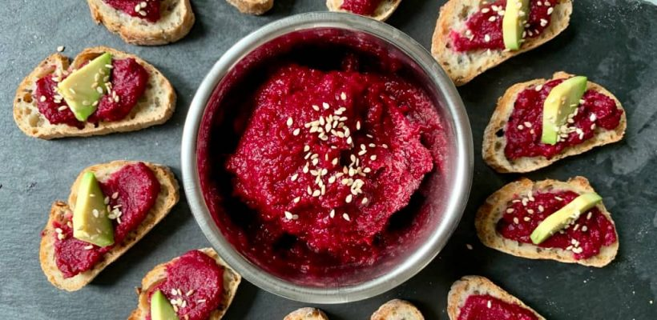

Voici une recette tr√®s facile et rapide, pour un ap√©ro sain et gourmand : un houmous de betterave et avocat ü•ë
Le pois chiche (base du houmous) est un allié de notre santé. En effet, il est riche en protéines végétales, fibres, vitamines et minéraux.
La betterave, quant à elle, regorge d’antioxydants puissants et a aussi une action bénéfique sur la pression artérielle.
Ingrédients5 personnes
- 1 betterave cuite
- 130g de pois chiches en boîte (sans le jus) ou de pois chiches cuits
- 1 baguette tranchée de pain complet (lire notre article sur le pain)
- 1 avocat
- Épices de votre choix (sel, ail en poudre, cumin)
Préparation de la pâte à pizza au chou-fleur :
1
Pour commencer, mixez les pois chiches avec la betterave et les épices.
2
Ensuite, tartinez le houmous sur le pain.
3
Pour finir, d√©coupez et d√©posez un petit bout d’avocat sur le dessus. Pour la d√©co, ajoutez des graines de s√©same ou de chia.

4
Aussi, vous pouvez accompagner ce houmous avec des bâtonnets de carottes crues.
Bon appétit ☀️

Allez , je vous le dit….
Essayez lors de votre prochaine tapenade noire de mettre environ un tiers (plus ou moins selon vos goûts) de figues séchées et molles.
Un pur d√©lice et des questions de la part de vos invit√©s…
D√©licieux ü•∞üí™!
Comment joindre le bon nutritif, l’originalit√©, le go√ªt, la couleur et l’√©conomie en toute simplicit√© ! Ce WE je teste avec les copines !
Bonjour
Bonne recette homousse au betteraves
Bonne idée de recette mais trop sucré pour moi : betterave
Je vais essayer, √ßa a l’air tr√®s bon
Génial ! facile. sain. peu de temps de prépa . peu coûteux.